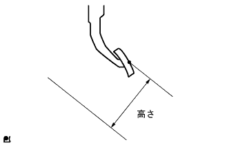
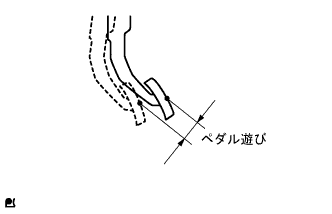
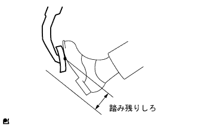

The ABS & BA system (4WD) brake pedal with EBD enters the back (fluid leakage, no air) |
| Step 1 | Pre -inspection |
|  |
Brake pedal height inspection
Operate the brake pedal and check for mechanical problems in the pedal operation.
Check the height of the brake pedal.
|  |
Brake pedal play inspection
After the engine is stopped, the pedal is stepped on several times, and there is no negative pressure in the brake booster.
Inspect the play of the brake pedal.
|  |
Brake pedal left tracking.
Wheel brake inspection
Inspect that disc brake pads, brake shoes and return springs of each wheel brake are properly attached.
Inspect buder plugs, union bolt looseness, gaskets, and fluid leaks from wheel cylinders.
Brake fluid leak, air inspection inspection
Check the fluid amount of the brake master cylinder reservoir.
The brake pedal is repeated repeatedly to check that there is no discomfort (air entry) during pedal operation.
Inspect the change in the fluid amount of brake master cylinder reservoir.
When the fluid amount is reduced, check flexible hoses, brake tubes damage, unionut nut loosening, and fluid leakage due to defective master cylinder stickers.
Brake -based system air removal
The brake pipeline and the air out of the brake actuator are removed.
| GO | |
| Step 2 | Inspection of actuator car |
Inspect the car on the actuator.
|
| ||||
| OK | |
| Step 3 | Brake Boo Star ASSY inspection |
Brake Boo Star ASSY will check the car on the car.
|
| ||||
| OK | ||
| ||